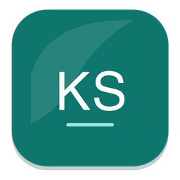

KSIC Studio Privacy Policy
KSIC Studio respects your privacy. This policy explains how the macOS edition of KSIC Studio handles information.
Data We Do Not Collect
KSIC Studio requires no user account and contains no advertising, analytics, or tracking SDKs. We do not upload your work groups, links, Recents, or imported files to any remote server.
Local Data Storage
The work groups, entries, and Recents you create are stored strictly inside the local macOS App Sandbox. You can proactively export a backup through the system file picker at any time.
Network Access
When you open an entry, KSIC Studio hands its URL to your default browser. Only when you manually run a health check does the app directly request the related HTTPS address.
Contact
For privacy inquiries, please contact support@kevinlabs.app.
KSIC Studio 隐私政策
KSIC Studio 尊重你的隐私。本政策说明 macOS 版 KSIC Studio 如何处理信息。
我们不收集的数据
KSIC Studio 不要求注册账户，不包含广告、分析或跟踪 SDK，也不会向开发者服务器上传你的分组、入口、最近使用记录或导入文件。
本地数据
你创建的分组、入口和最近使用记录保存在 macOS App Sandbox 沙盒中。你也可以通过系统文件选择器主动导出备份。
网络访问
打开入口时，KSIC Studio 将地址交给系统默认浏览器。只有在你主动执行健康检查时，App 才会直接请求对应的 HTTPS 地址。
政策变更与联系
如有隐私疑问，请联系 support@kevinlabs.app。
KSIC Studio プライバシーポリシー
KSIC Studioはお客様のプライバシーを尊重します。本ポリシーではmacOS版KSIC Studioにおける情報の取り扱いについて説明します。
収集しないデータ
KSIC Studioはアカウント登録を必要とせず、広告、アナリティクス、トラッキングSDKを含みません。グループ、リンク、履歴が外部サーバーに送信されることはありません。
ローカルデータ保存
作成されたすべてのデータはmacOSのApp Sandbox内に安全に保存されます。いつでもシステムファイルピッカーからバックアップをエクスポートできます。
ネットワークアクセス
リンクを開く際、URLは既定のブラウザに渡されます。手動でヘルスチェックを実行した場合にのみ、対象のHTTPSアドレスへ直接リクエストを送信します。
お問い合わせ
プライバシーに関するお問い合わせは support@kevinlabs.app までご連絡ください。
KSIC Studio 개인정보 처리방침
KSIC Studio는 사용자의 개인정보를 소중히 생각합니다. 본 방침은 macOS용 KSIC Studio의 정보 처리에 대해 설명합니다.
수집하지 않는 데이터
KSIC Studio는 계정 생성이 필요 없으며 광고, 분석 또는 추적 SDK가 포함되어 있지 않습니다. 작업 그룹, 링크 및 기록을 원격 서버로 전송하지 않습니다.
로컬 데이터 저장
생성된 모든 데이터는 macOS App Sandbox 내에 로컬로 안전하게 저장됩니다. 시스템 파일 선택기를 통해 언제든지 백업을 내보낼 수 있습니다.
네트워크 접근
항목을 열면 URL이 기본 웹 브라우저로 전달됩니다. 사용자가 수동으로 상태 확인을 실행할 때만 해당 HTTPS 주소로 직접 요청합니다.
문의하기
개인정보 관련 문의는 support@kevinlabs.app으로 문의해 주세요.
KSIC Studio Datenschutzerklärung
KSIC Studio respektiert Ihre Privatsphäre. Diese Erklärung erläutert den Umgang mit Daten in KSIC Studio für macOS.
Daten, die wir nicht erfassen
KSIC Studio erfordert kein Benutzerkonto und enthält keinerlei Werbe-, Analyse- oder Tracking-SDKs. Daten werden niemals an Server übertragen.
Lokale Datenspeicherung
Alle erstellten Einträge verbleiben sicher in der lokalen macOS App Sandbox. Sie können jederzeit Sicherungskopien exportieren.
Netzwerkzugriff
Links werden an Ihren Standardbrowser übergeben. Nur bei manueller Verbindungsprüfung fragt die App die betreffende HTTPS-Adresse direkt ab.
Kontakt
Bei Fragen zum Datenschutz kontaktieren Sie bitte support@kevinlabs.app.
Politique de confidentialité de KSIC Studio
KSIC Studio respecte votre vie privée. Cette politique décrit la gestion des informations dans l'application macOS.
Données non collectées
KSIC Studio ne requiert aucun compte et ne contient aucun SDK publicitaire, analytique ou de traçage. Vos données ne sont jamais téléversées.
Stockage local des données
Vos groupes et liens sont stockés exclusivement dans l'App Sandbox locale de macOS. Vous pouvez exporter une sauvegarde à tout moment.
Accès réseau
L'ouverture d'un lien le transmet à votre navigateur par défaut. L'application n'interroge les URL HTTPS que lors d'un test manuel de santé.
Contact
Pour toute question : support@kevinlabs.app.
Política de privacidad de KSIC Studio
KSIC Studio respeta su privacidad. Esta política explica el tratamiento de la información en KSIC Studio para macOS.
Datos que no recopilamos
KSIC Studio no requiere cuenta de usuario y no contiene SDK de publicidad, análisis o seguimiento. Sus datos nunca se cargan a servidores.
Almacenamiento local de datos
Los grupos y enlaces creados se guardan estrictamente dentro del App Sandbox local de macOS. Puede exportar copias de seguridad en cualquier momento.
Acceso a la red
Al abrir un enlace, se pasa a su navegador predeterminado. Solo se realizan peticiones directas HTTPS durante la verificación manual de estado.
Contacto
Preguntas sobre privacidad: support@kevinlabs.app.
Política de Privacidade do KSIC Studio
O KSIC Studio respeita sua privacidade. Esta política explica como a edição macOS do KSIC Studio trata as informações.
Dados que não coletamos
O KSIC Studio não exige conta e não contém SDKs de publicidade, análise ou rastreamento. Nenhum dado é enviado a servidores remotos.
Armazenamento local
Seus grupos e links ficam salvos exclusivamente no App Sandbox local do macOS. Você pode exportar backups a qualquer momento.
Acesso à rede
Os links são abertos no seu navegador padrão. Apenas checagens manuais de status fazem requisições diretas a endereços HTTPS.
Contato
Dúvidas de privacidade: support@kevinlabs.app.